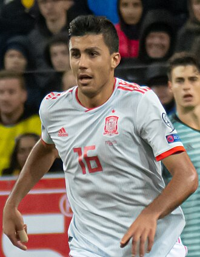

|  | Full Name | Rodrigo Hernández Cascante |
| Born | 22 June 1996 (Age 28) | |
| Nationality | Spanish | |
| Alma mater | Jaume I University | |
| Occupation | Footballer | |
| Height | 6' 3" | |
| Position | Defensive Midfielder |
Rodrigo Hernández Cascante (born 22 June 1996), known as Rodri or Rodrigo, is a Spanish professional footballer who plays as a defensive midfielder for Premier League club Manchester City and the Spain national team. Known for his passing, playmaking and physical attributes, he is widely regarded as one of the best players in the world. Rodri is a Spain international and former youth international. He made his debut for the senior national team in 2018 and represented his country at UEFA Euro 2020, the 2022 FIFA World Cup and Euro 2024. He won the UEFA Nations League in 2023, being named the best player of the finals tournament, and was an integral part in Spain's victory at Euro 2024, for which he was named Player of the Tournament. Rodri has won several individual awards, most notably the 2024 Ballon d'Or. He became the second male Spanish player in history to achieve this feat after Luis Suárez, who did so in 1960. He is the first Manchester City player in history to win the award.
Rodrigo Hernández Cascante joined Atlético Madrid's youth setup in 2007 aged 11, from CF Rayo Majadahonda. Released in 2013 due to a "lack of physical strength", he subsequently signed with Villarreal.Rodri made his first-team debut on 17 December 2015, starting in a 2–0 home win against SD Huesca for that season's Copa del Rey. His first La Liga appearance was on 17 April 2016, when he came on as a second-half substitute for Denis Suárez in a 2–1 away loss to Rayo Vallecano. On 4 December 2017, having already established himself as a regular, Rodri renewed his contract until 2022. He scored his first goal in the Spanish top level on 18 February 2018, the opener in a 1–1 away draw against RCD Espanyol.On 24 May 2018, Rodri returned to Atlético Madrid after the club reached an agreement with Villarreal for his transfer. He signed a five-year contract with the club.On 3 July 2019, Manchester City met the terms of Rodri's £62.6 million release clause, enabling him to buy out the remainder of his contract with Atlético and leave the club. The transfer was a new record fee paid by Manchester City. He signed a five-year contract. Read more...
After playing for Spain at under-16, under-19 and under-21 levels, Rodri was first selected by the full side on 16 March 2018. After missing out on selection for the 2018 FIFA World Cup, Rodri was named in Spain's squad for their first two UEFA Nations League fixtures against England and Croatia in September 2018. After being an unused substitute in the first match at Wembley Stadium, he made his competitive debut as a 59th minute substitute for Sergio Busquets in the 6–0 win over Croatia on 11 September. A month later, Rodri made his first start for Spain in a 4–1 friendly win over Wales in Cardiff and was named man of the match by the BBC. Rodri played in seven of Spain's ten matches during UEFA Euro 2020 qualifying, starting in five.On 17 November 2020, Rodri scored his first senior international goal in Spain's 6–0 defeat of Germany in their final group phase match of the 2020–21 UEFA Nations League. The win in Seville ensured La Roja would finish top of Group 4 and qualify for the 2021 UEFA Nations League Finals in Italy. Read more...
| Year | Team | Trophy |
|---|---|---|
| 2018-2019 | Atlético de Madrid | UEFA Super Cup |
| 2020-2021, 2021-2022, 2022-2023, 2023-2024 | Manchester City | English Premier League |
| 2023 | Manchester City | FA Cup |
| 2020, 2021 | Manchester City | English League Cup |
| 2019-2020, 2023-2024 | Manchester City | Community Shield |
| 2022-2023 | Manchester City | UEFA Champions League |
| 2023-2024 | Manchester City | UEFA Super Cup |
| 2024 | Manchester City | FIFA Club World Cup |
| 2024 | Spainish National Team | UEFA Euro 2024 |
| 2023 | Spainish National Team | UEFA Nations League |
| Year | Team | Award |
|---|---|---|
| 2024 | Manchester City | Ballon D'or |
| 2022-2023 | Manchester City | UEFA Men's Player of the Year |